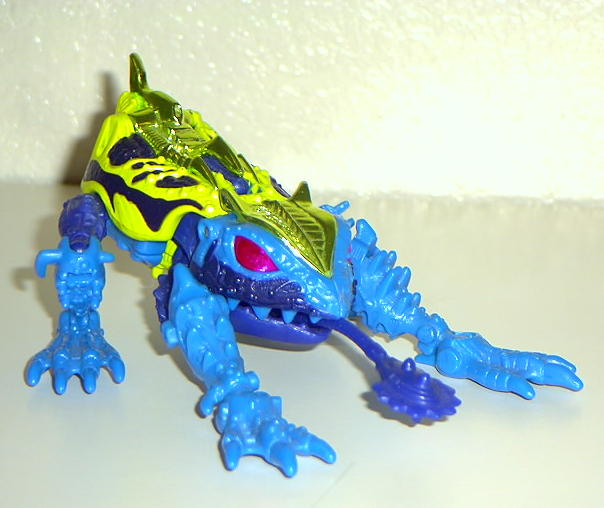
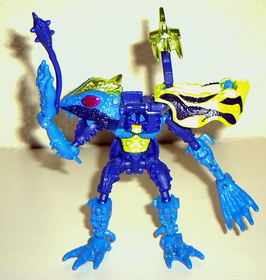

Spittor
(Transmetal 2)
Spittor
(Transmetal 2)


Allegiance
: Predacon
Size
: Basic
Difficulty of Transformation
: Medium
Color Scheme
: Chrome light green,
blue, purple, light green, black, some chrome red
Rating
: 9.1
Beast mode is a frog.
This mode is very brightly colored and nicely detailed, with spots and
stripes, and a nice mix of wires and warts. There are literally no extras
in this mode, and looks very nice from just about any view. His tongue
is his club in robot mode, and he looks like he's always giving someone
a raspberry. This mode is a lot more sharper and lithe than the
original
Spittor
, and, in my opinion, cooler looking as well.
Robot mode is very well
done as well. He has an overall 'relaxed' appearance, and reminds me vaguely
of a Battletoad in this mode, especially his face. His shoulder pads are
the only extras in this mode, but they don't get in the way, and actually
complement the robot mode rather than make it look odd. On his left shoulder
pad is a claw that can be raised and moved, and, although odd-looking,
is sort of like a third hand. His spark crystal is under is left shoulder,
or under his mouth in beast mode. He has a 'hunchback' look to him in this
mode.
A very nicely done Transmetal
2 in both modes, arguably the best basic Transmetal 2 there is. Highly
recommended.
Spittor Transmetal 2 Bio
:
FUNCTION: Special Forces, Amphibious
Warrior
MOTTO: "I'm mean to the core... I've
got meanness oozing out of every pore."
Driven by anger and galvanized by confidence
in his craft, Spittor will do whatever necessary to achieve his deadly
assignments. Highly skilled under sea and on land, he is the soundless
warrior who Megatron reserves for the jobs that require seamless execution
- a true professional. Covered in poison from head to tail, it was rumored
that rubbing his back would bring luck but only resulted in several Predacons
slipping into severe and extended dementia. Dangerously patient; has an
electro-venom tongue which actually detaches to be wielded as a weapon
in robot mode. Can leap one quarter-mile in a single bound. Has camouflaged
spinal claw that eliminates frontal attacks. Unrefined and consumed by
repressed anger; dislikes all things but is extremely devoted to Megatron.
Strength: 5.8
Intelligence: 4.9
Speed: 6.9
Endurance: 8.1
Rank: 5.0
Courage: 7.1
Firepower: 5.7
Skill: 8.9
Review by Beastbot
Back to
Transmetals 2 Index